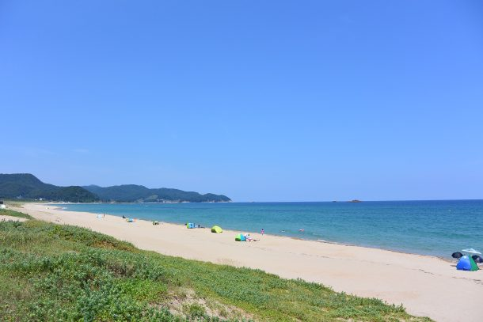
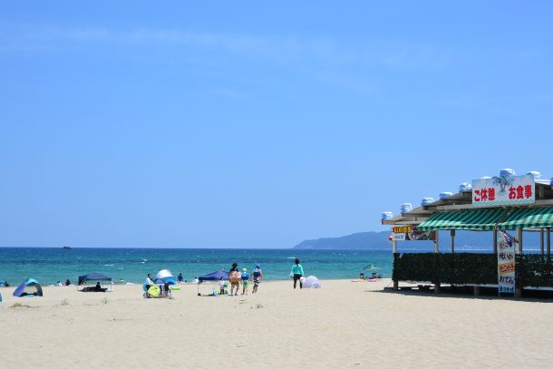
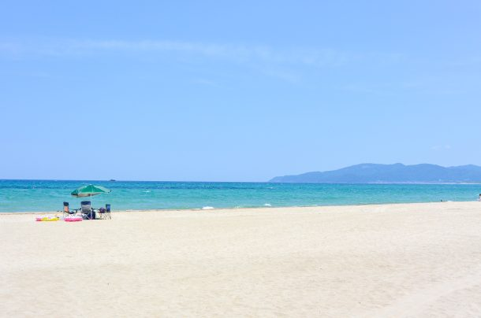
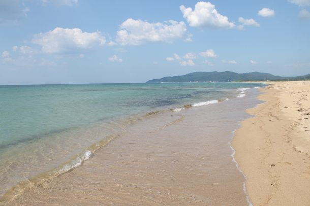
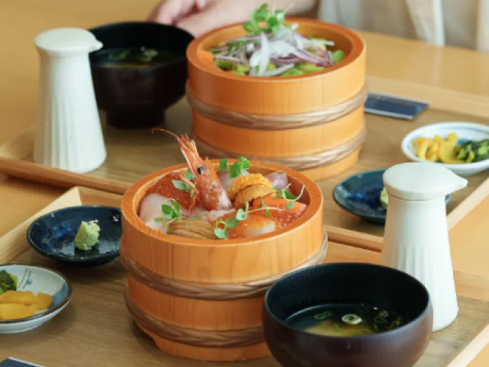
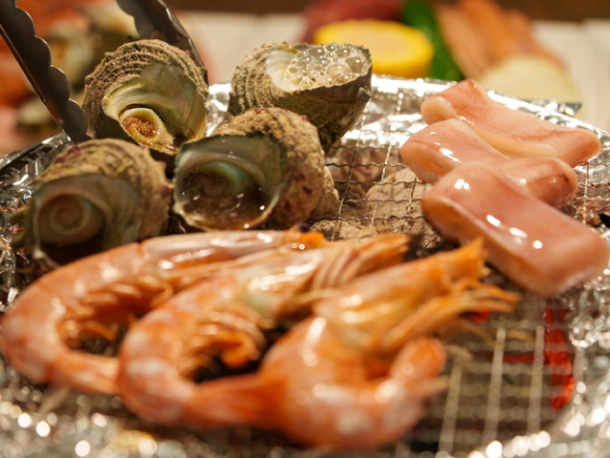

最新の情報は 公式サイトのツアーページ をご覧ください。
夏休みは家族で丹後へ！夏の丹後満喫プライベートツアー
| 旅行代金（税込） | |
| 2～3名 | 32,000円／1人 |
| 4～5名 | 18,000円／1人 |
| 6～9名 | 16,000円／1人 |
| 昼食オプション 炭火海鮮バイキング（税込） | |
| 大人 | 3,980円 |
| 小人（小学生） | 1,650円 |
| 幼児（3～5歳） | 550円 |
本ツアーの募集は終了いたしました
貸切で再現できる場合もございますのでご相談ください。お問合せフォームはこちら
＜MKトラベルTOPはこちら▶＞
＜おすすめツアーはこちら▶＞
夏休みのお出かけは、家族だけの貸切タクシーで丹後へ。
京都から車で約3時間、青い海と美しい砂浜が広がる丹後・小天橋海水浴場へご案内いたします。
小天橋海水浴場で海を満喫したあとは、久美浜温泉でリフレッシュ。
さらに日本海の新鮮な海の幸も楽しめる、夏限定の日帰りプランです。
移動は貸切タクシーだから、荷物が多い夏のお出かけも安心。
小さなお子様連れのご家族や、三世代旅行の思い出づくりにもおすすめです。
大切なご家族との夏の1日を、丹後でゆっくりお過ごしください。
| おすすめポイント🌟 |
| ・家族だけの貸切タクシーでラクラク移動 ・小天橋海水浴場で夏を満喫 ・海のあとは久美浜温泉でリフレッシュ ・丹後の海の幸を楽しむランチ（自由食 or 海鮮バイキング） ・三世代旅行にもおすすめの夏限定プラン |
行程
| 日時 | 場所 |
| 7:30 | 京都市内のご指定場所（集合・出発） |
| 10:10 | 小天橋・葛野浜海水浴場 |
| 11:50 | 久美浜温泉 湯元館 ＜日帰り入浴／約60分＞ |
| 13:00 | うみのうた 海鮮食堂 ＜自由昼食★オプション:海鮮バイキング／約90分＞ |
| 14:40 | かに一番 ＜お買い物／約20分＞ |
| 17:30頃 | 京都市内のご指定場所（解散） |
※渋滞等で予定通りの滞在時間をお取りすることができない場合がございます。予めご了承ください。
※ドライバーは同行いたしません。
※昼食時、バイキングの場合はお席をご用意いたしますが、フリー昼食の場合はお席の確約ができません。予めご了承ください。
※ご旅行代金には日帰り入浴代が含まれております。
◆送迎エリア：京都市のみ
※京都市の次のエリアは本件対象外とさせていただきます。
・北区中川・小野・杉阪・真弓・大森・雲ヶ畑
・右京区京北・嵯峨清滝・嵯峨水尾・嵯峨越畑・嵯峨樒原
・左京区花脊・広河原・久多・大原
小天橋・葛野浜海水浴場




写真提供：京丹後市観光公社
うみのうた
-

海鮮食堂
-

炭火海鮮バイキング（有料オプション）
久美浜温泉 湯元館
-

露天風呂
-

薬草風呂
【MKトラベルLINE公式アカウント】
MKトラベルの新規ツアー情報をLINEでお届けいたします

【各SNSでも京都の情報やツアー情報をお届けしています】


旅行条件
| ツアー番号 | TNG0708 |
| 出発地 | 京都市 |
| 添乗員／ガイド | なし（乗務員がその業務を代行いたします）／なし |
| 食事 | なし |
| 最少催行人数 | 2名 |
お申込みについてのご注意
※旅行条件・旅行代金は、2026年6月1日現在を基準としています。
※行程および帰着時間は交通事情などにより変更になる場合があります。
※お申込みの前に弊社の募集型企画旅行規約をご確認ください。
よくある質問
Q.2名ですが、申し込みできますか？
A.はい。親子・夫婦でのご利用はもちろん、ご友人とのお出かけでのご利用も承っております。
Q.参加したかったけど、日程が合いません／終了していました
A.貸切で再現できる場合もございますのでご相談ください。お問合せフォームはこちら
本ツアーの募集は終了いたしました
貸切で再現できる場合もございますのでご相談ください。お問合せフォームはこちら
＜MKトラベルTOPはこちら▶＞
＜おすすめツアーはこちら▶＞
・クレジットカード決済
・コンビニ決済（※お電話にてご予約お願いいたします）
お支払方法詳細はこちら
お客様のご都合でご予約をキャンセルされる場合は、すみやかに下記お問合せ先までご連絡ください。
◆コンビニ決済をご選択の場合、支払期限を過ぎますとご予約は自動的にキャンセルとなりますのでご注意ください。
◆お客様のご都合でご予約をキャンセルされた場合、下記キャンセル料を申し受けます。お支払いいただきました旅行代金よりキャンセル料を相殺して、お客様へご返金させていただきます。
【店頭決済／銀行振込／コンビニ決済の場合】
お客様のご指定の口座へご返金させていただきます。
【クレジットカード決済の場合】
ご利用のクレジットカード会社を経由して、ご返金させていただきます。締め日のタイミングによっては一度請求が発生し、その後返金処理となります。キャンセル料
11日目に当たる日以前
無料
10日目に当たる日以前
20%
7日目に当たる日以前
30%
旅行開始日の前日
40%
旅行開始日の当日
50%
旅行開始後又は無連絡
100%